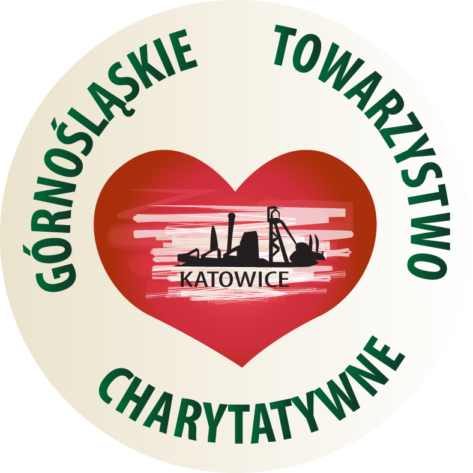

Słodki Tydzień Pomocy
26.02 - 03.03

ZBIERAMY CUKIER DLA GÓRNOŚLĄSKIEGO TOWARZYSTWA CHARYTATYWNEGO!
Jak można pomóc?
Wystarczy przynieść dowolną ilość cukru do tych miejsc:
- Śląskie Techniczne Zakłady Naukowe w Katowicach przy wyjściu z budynku 2 (głównego)
- Zakrystia Parafii św. Józefa Robotnika w Katowicach na Józefowcu ul. Mikusińskiego 8 do zakrystii


Co to Górnośląskie Towarzystwo Charytatywne?
To jedna z pierwszych pozarządowych i pozakościelnych organizacji charytatywnych, założona w 1989r. Prowadzi zbiórki odzieży dla potrzebujących, noclegownie, wydaje także posiłki dla bezdomnych, bezrobotnych i ubogich. Rocznie wydają ponad 120 tys. posiłków oraz ponad 50 tys. noclegów dla potrzebujących.
Szczególne podziękowania
Ksiądz Adrian Przewoźniak
Pani psycholog Anita Wieloch
Pani Profesor Agnieszka Dworak
Pani dyrektor Danuta Kleinert
Przewodniczącego SU Bartoszowi Gielarowskiemu
Wolontariuszom: Mikołaj Bloch, Zuzanna Maciaszek, Juba Maślanka, Emilia Łabędzka, Dorota Bagińska, Dagmara Bąk, Nina Świątczak, Jakub Wcisło.
Strona Śl.TZN
Strona Parafii św. Józefa Robotnika
Facebook Parafii św. Józefa Robotnika
Facebook Górnośląskiego Towarzystwa Charytatywnego
Akcja organizowana z pomocą wolontariatu Śl.TZN w Katowicach